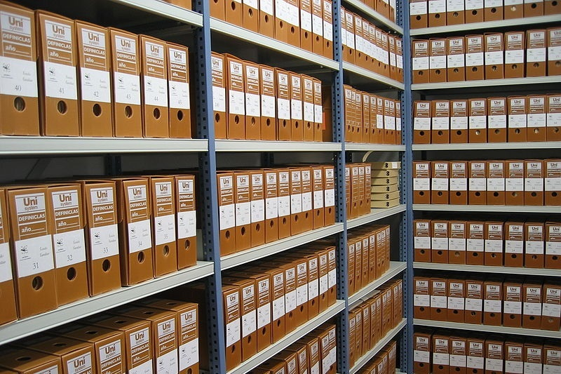
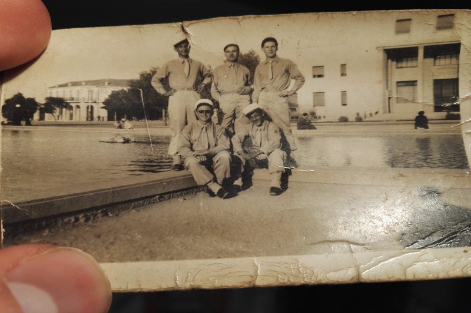

Mivel találkozhatsz ezen a weboldalon?

Kutatás menete
A Kutatás menete menüpontban összeszedtem a lényegesebb információkat, amikre szükséged lehet, ha családfát szeretnél kutatni. Ugyanezt a menüpontot a képre kattintva is elérheted.

Eredmények
Az Eredmények menüpontban tudsz bővebben olvasni saját kutatásomról. Itt különféle érdekességeket szedtem össze, amelyeket a kutatás során találtam. Ezt a menüpontot a képre való kattintással is elérheted.

Kutass Te is!
Ha van egy elveszett rokonod, akiről szeretnél többet megtudni, akkor töltsd ki a Kutass Te is! menüpont alatt található űrlapot. Ezt az űrlapot a képre való kattintással is elérheted!